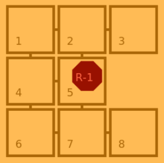

Distances and Paths
Efficient MoveIt AI requires evaluation of distance in graph and path computation. In this tutorial we consider only on robot on the map.
Distance with Disjkstra
Let consider a graph, Dijkstra's algorithm compute the shortest path from a given origin node toward a destination node. Starting from the origin node, Dijkstra visits all possible connections, in a recursive way, until the destination node is founded.
By considering that, the destination node would be the last visited one, Dijkstra computes a distances' dictionary from the origin node toward all the other nodes.
In MoveIt game, the algorithm can be simplified considering that all weight is \(1\).
Furthermore, nodes are similar to tiles in our model.
Let consider a simple graph of \(8\) nodes:

Starting from node \(5\), Simplified-Dijkstra will first find \(2\), \(4\) and \(7\) at distance \(1\), then \(1\), \(3\), \(6\) and \(8\) at distance 2. The algorithm deep into the graph until all nodes are visited, ring by ring.
def computeDistances(self, iTile):
# Initialize distances to 0:
dists= [iTile] + [0 for i in range( self._model.map().size() )]
# Initialize step from iTile:
ringNodes= self._model.map().neighbours(iTile)
ringDistance= 1
# while theire is nodes to visit
while len(ringNodes) > 0 :
nextNodes= []
# Visit all step nodes:
for node in ringNodes :
# Update distance information
dists[node]= ringDistance
for node in ringNodes :
# Search for new tile to visit:
neighbours= self._model.map().neighbours(node)
for candidate in neighbours :
if dists[candidate] == 0 :
nextNodes.append(candidate)
# swith to the next step.
ringNodes= nextNodes
ringDistance+= 1
# Correct 0 distance:
dists[iTile]= 0
return dists
At this point, we compute the distances considering one origin node.
The idea is to apply this method to all nodes, at the start time (into the wakeUp method) to fill an entire matrix.
| x | 1 | 2 | 3 | 4 | 5 | 6 | 7 | 8 |
|---|---|---|---|---|---|---|---|---|
| 1: | ||||||||
| 2: | ||||||||
| 3: | ||||||||
| 4: | ||||||||
| 5: | 2 | 1 | 2 | 1 | 0 | 2 | 1 | 2 |
| 6: | ||||||||
| 7: | ||||||||
| 8: |
Path Planning
So it is possible to consider that we have a distance matrix structure over all couple of nodes (named _distances).
From that statement, going from a tile A to a tile B consists in moving step by step, by selecting the next node with the minimal distance to B.
1: moveToward selects the next appropriate move.
def moveToward(self, iTile, iTarget):
# If no need to move:
if iTile == iTarget :
return 0, iTile
# Get candidates:
clockdirs= self._model.map().clockBearing(iTile)
nextTiles= self._model.map().neighbours(iTile)
selectedDir= clockdirs[0]
selectedNext= nextTiles[0]
# Test all candidates:
for clock, tile in zip( clockdirs, nextTiles ) :
if self._distances[tile][iTarget] < self._distances[selectedNext][iTarget] :
selectedDir= clock
selectedNext= tile
# Return the selected candidates:
return selectedDir, selectedNext
2: Then, path calls moveToward until the position is reached.
def path(self, iTile, iTarget):
clock, tile= self.moveToward(iTile, iTarget)
move= [clock]
path= [tile]
while tile != iTarget :
clock, tile= self.moveToward(tile, iTarget)
move.append( clock )
path.append( tile )
return move, path
From that point it is now possible to orient robot moves toward the next mission to take or toward the current mission target.
A* algorithm
In A* family algorithms, we consider that we do not have an exact distance matrix, and that it requires too much computation to create it. However, it is considered true that it is possible to have approximate distances, typically, Euclidean distances computed from tile centers. The approximate distance is considered as an heuristic to guide the path planning.
At each time step, the next node is selected accordingly to the heuristic (the closest one to the target), but backtrack mechanism is added if the search fall in a deadlock.
More detail on wikipedia.